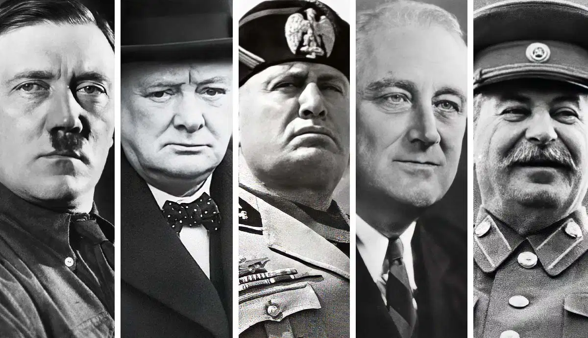
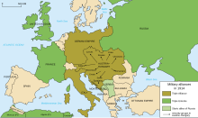
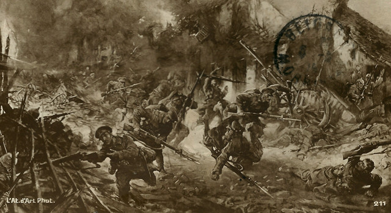

Za první světovou válkou, která započala 28. července 1914, vyhlášením války Srbsku Rakouskem-Uherskem, se rozvinula série událostí. I přes počáteční úspěchy se mu nepodařilo Srby porazit a na konci roku zůstaly fronty téměř nezměněné. S neuspěchem Německa na západní frontě přišla také stabilizace Francouzkých vojsk. Na Východní frontě Rusko zaútočilo na Prusko, ale Německo Rusy porazilo. Osmánská říše poté vstoupila do Trojspolku a otevřela nevé fronty, včetně boje proti Rusku a Kavkaze. Konflikt zasáhl jak Afriku tak Tichomoří.
V roce 1914 Srbové ustoupili před rakousko-uherskou převahou. Na Západní frontě sice došlo k bojům, ale území se změnilo jen minimálně. Německé ponorky byly úspěšné proti lodím Trojdohody. Na Východní frontě posunuly mocnosti Trojspolku frontu na východ. Osmanská říše čelila porážkám na Kavkaze a v Dardanelách, ale nezhroutila se. Vstupem Itálie do války vznikla Italská fronta, kde Italové neuspěli proti Rakousku-Uhersku.
V roce 1915 byla Srbska fronta nahrazena Soluňskou frontou po vytlačení Srbska armádami Trojspolku. Na Západní frontě pokračovaly těžké boje, ale bez větších územních změn, zatímco německé ponorky dosáhly významných úspěchů. Rusové postoupili na Východní frontě a způsobili velké ztráty nepříteli. Na Italské frontě Italové neuspěli v pokusech o průlom. Rumunsko vstoupilo do války na straně Trojdohody, ale bylo rychle poraženo a vytlačeno armádami Trojspolku.
